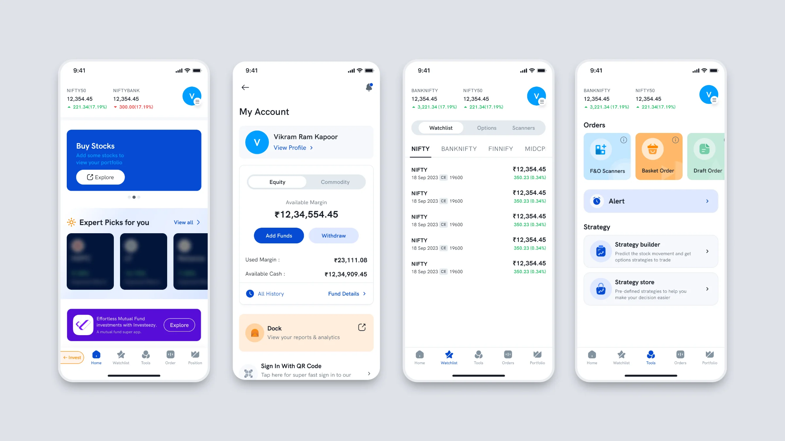
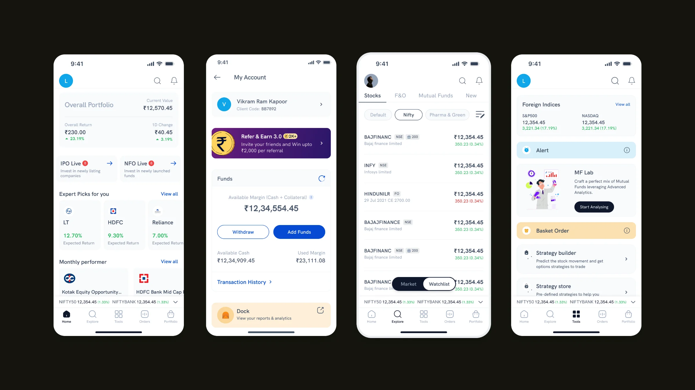
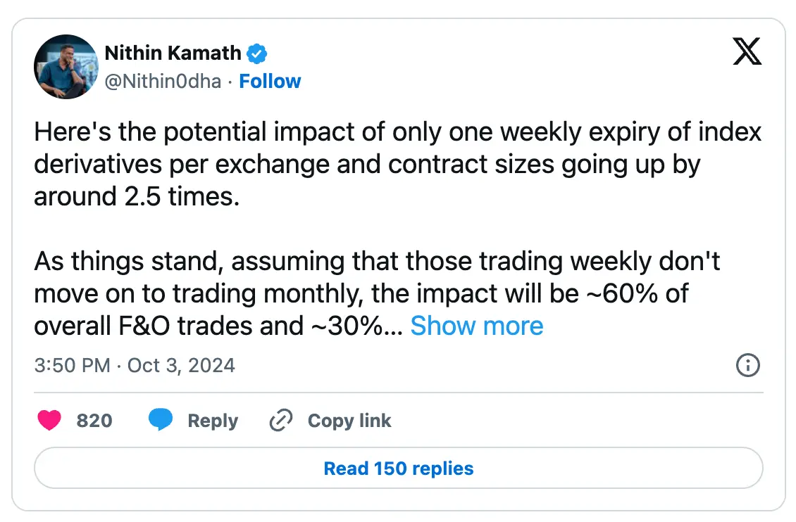
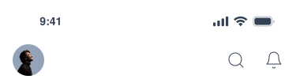
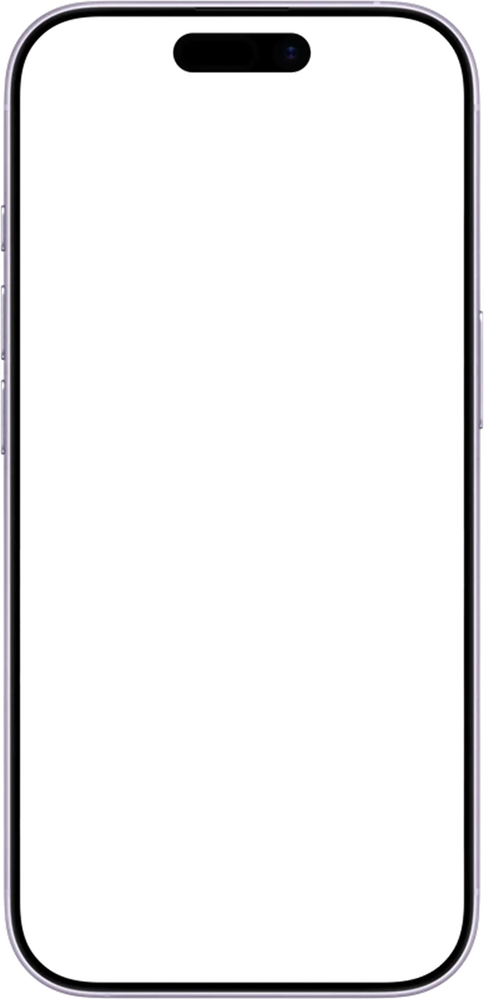
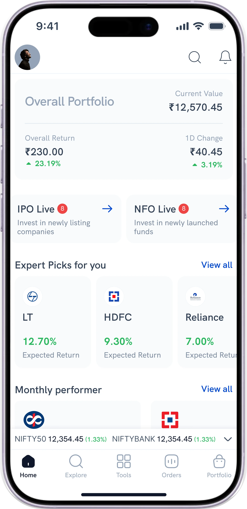
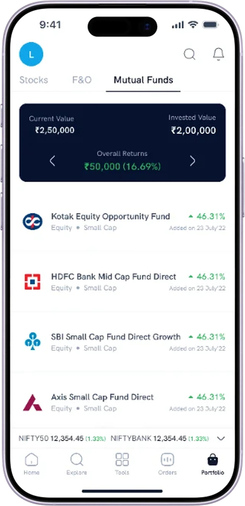
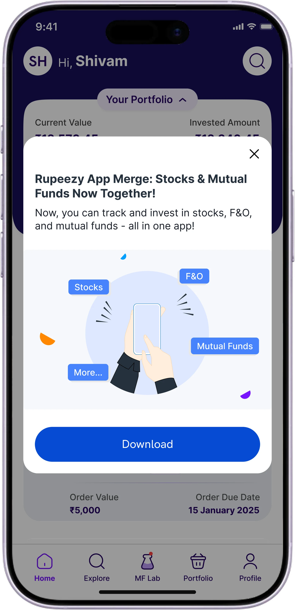
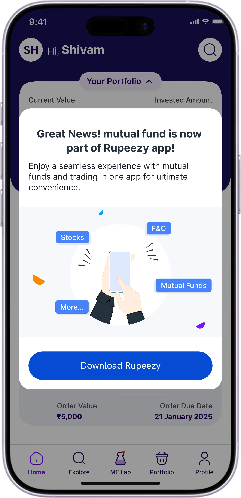
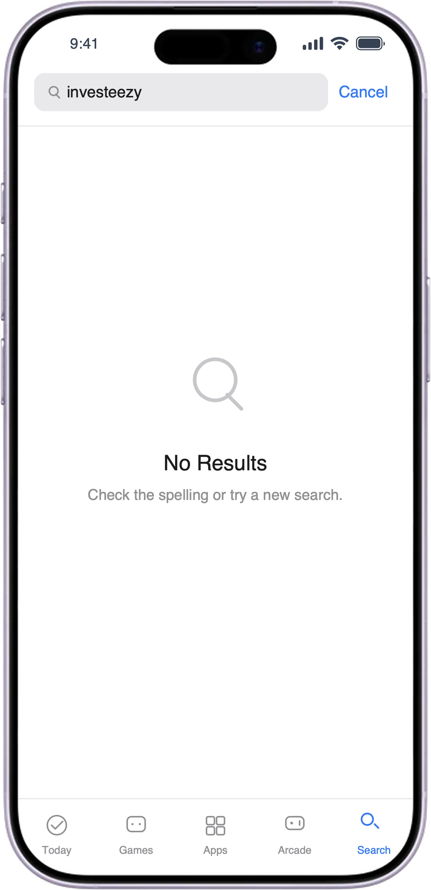

Drag to compare, or tap Before / After.
The switch that could only hold two
Two apps, two brands, one customer who could never see everything he owned. I was asked for a switch between them and I shipped it on the deadline. Placing it is what showed me the model that had to replace it. Live today across stocks, F&O and commodities.
Before
- •
Mutual funds, advertised as a separate download.
- •
A pill in the corner pointing at the same app.
- •
No combined total. Home opens by asking you to buy stocks.
- •
Watchlist. A trader’s word, in an app we needed first-time investors to use.
After
- •
Mutual funds is a tab now, level with the rest.
- •
One total, across everything you own.
- •
IPO and NFO side by side. Neither product is the guest.
- •
Explore. A word a first-timer understands.
Context
Two apps. One customer. Neither showed the whole picture.
Rupeezy Trade held stocks and F&O. Investeezy held mutual funds. To answer “how am I doing”, you opened both and added the totals up yourself.
And the trading app carried an advert for the other one, in Investeezy’s violet, with a button that took you out of the app to a second download.
The banner is the business problem, sitting in production, inside our own app.
The problem
Then a rule took most of the trading revenue.
In October 2024, a regulator decided small retail traders should be priced out of F&O. Ninety-seven percent of what Rupeezy earned came through that one product.
Selling mutual funds had been the plan for years. It was never urgent enough to start. Then a date was set.
1 Oct 2024. SEBI announces new rules for index derivatives. 20 Nov 2024. First set goes live, the smallest contract you can buy rises to ₹15 lakh. 15 Jan 2025. Phase one ships. 1 Feb 2025. Second set goes live, option premium has to be paid upfront. Mar 2025. Trading revenue is down about 75%.
I pulled this in Firebase myself. March 2025 against September and October 2024, the months before the rules. Percentages only. It is the one number on this page I measured rather than was told.

Zerodha’s founder estimated the rules would hit about 60% of all F&O trades.
Cross-sell
A fund investor could not buy a stock. A trader could not start an SIP.
01
Every release, twice
Two developers per app, four of the seven engineers, shipping every rule change twice.
02
One product line
97% of revenue. That is not concentration. That is exposure.
03
Mutual funds were no longer extra income. They were the only other business we had.
Discovery
Everyone else was already on one app.
Groww, Angel One, Upstox and Paytm Money all sold stocks, F&O and mutual funds inside a single app. Angel One had folded funds in back in 2023.
“Every other broker has one app, so why do I need two?”
From the Play Store reviews
What I had instead of users
I never spoke to a customer about this project. Everything I knew was second hand: Play Store reviews, in-app feedback, and Firebase for how people moved between the two products. I read it. I did not ask for it.
Approach
The answer was a switch, and it had six weeks.
Put Invest inside Trade with a switch between them. It is the pattern food delivery apps use to move between food and groceries. Refine it once it was live. I did not argue. Revenue was falling every week, and shipping something beats perfecting nothing.
For the business
Sell to both halves of our own customer base, and build every rule change once instead of twice.
For the customer
One place where all the money lives, and one number that says how you are doing.
Where the switch lived was my call.

01 · Rejected
Top navigation
It already carried indices, search and alerts. Adding the switch meant redesigning screens I wasn’t touching.
02 · Rejected
A floating button on Home
It lives on one screen. Three levels into a stock, you’d have to back out entirely to switch.
03 · Chose
Bottom navigation
On every screen. One tap from wherever you already are.
Phase one shipped on 15 January 2025. Six weeks after design started, two weeks before the second set of rules.
I was placing the switch in the bottom bar when I saw what it could not do.
A switch holds two things. Commodities were already being discussed.
Solution
Two directions, not two products.
You put money somewhere, and you watch what it does. Stocks and mutual funds are not two jobs. They are two ways of doing one.
So two things run through the app at the same time. What you own, and what you are doing with it. Give each one its own row, and the app holds as many products as you like. A switch cannot, because a switch has two sides.

- ↑
Top row · what you own
- ↓
Bottom row · what you are doing
Tap either row and the one you did not touch holds still. Adding a fourth product changes one row and nothing else.

Stocks · Portfolio
Tap either row above or below to see what moves.

Tap a tab above, or an icon below, to try it.
Alignment
I built it instead of explaining it.
The difference between a switch and two rows is hard to hear and easy to see. So I stopped talking and made a working prototype.
If I cannot convince people with words, the problem is usually the format, not the argument.
I showed it to the design team, then a VP Product and a Director. Everyone agreed it was the right direction.
There was no room for it. The regulation had filled every team’s queue, the switch was live and doing its job, and this needed real engineering on top.
So it was agreed, and it was parked.
Information architecture
Ten slots became five.
Two apps meant two bottom bars, five slots each, and the same ideas spelled differently in both.
The words changed too. Position is F&O language. You open a position and you close it. Somebody buying a fund holds it for years. Watchlist is a trader’s habit, so it became Explore, which is what a first-timer is actually doing.
Key decisions
Home breaks the pattern, on purpose.

One number at the top, every product underneath it, and no product row anywhere on this screen.
The call
Whether Home carries the product row like every other screen.
Considered
Give it the row. Consistent, and you always know which product you are in.
Chose
No row on Home. Everything at once. With a row, somebody who trades would only ever see stocks there, and the point of the merge is that they see funds too.
Cost
One screen breaks the pattern, and Home is the only place the navigation does not tell you what you are looking at.
Home leads with one number for everything you hold, puts IPO and NFO side by side so neither product is the guest, and uses words a beginner recognises. Hybrid. ELSS. Start with ₹100.
A first-timer lands where they said they wanted to be.

The product row scrolls. The bottom bar does not move.
The call
Which product a first-time user sees first.
Considered
Always open on Stocks. Simple, and right for most people.
Chose
Use what they told us at sign-up. Somebody who said they came to invest opens on Mutual Funds. Stocks only when we do not know.
Cost
The fallback still favours traders, so somebody who skipped that question starts in the wrong place.
Implementation
We moved people over a month, not overnight.
Sign-up was already shared between the two apps, so accounts linked themselves. Nobody had to verify anything again or upload a document.

One. You can close it. For a month.

Two. You cannot. One action left.

Three. The old app leaves the stores.
Switching everybody at once would have been faster. In an app that holds your money, something that suddenly stops working reads as broken, not as an upgrade.
Outcome
The model is live today. It holds a product I never designed for.
Two rows, across stocks, F&O and commodities. Commodities arrived after I left.
Mutual funds is in the app too, reached by a switch in the bottom bar rather than by the product row.
I left in August 2025, before any of this was built.
I opened the current app and checked.
What I did not do
No testing with customers. The decisions came from the business, the data and my own reasoning.
No measure agreed up front. We never said what this should move before shipping, so I cannot tell you whether cross-sell improved.
What I can claim
Three products on one model. Stocks, F&O and commodities.
Four developers to three. They had been split two per app.
Rule changes shipped once, not twice.